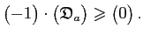
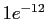
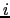
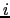
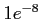
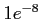
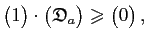

Figure:
A schematic of the new model-free optimisation protocol. Initially models 
to 
(![[*]](file:/usr/lib/latex2html/icons/crossref.png) -) of the set
for each spin system 
are optimised, model elimination used to remove failed models, and AIC model selection used to pick the best model. Once all the
have been determined for the system the the local
-) of the set
for each spin system 
are optimised, model elimination used to remove failed models, and AIC model selection used to pick the best model. Once all the
have been determined for the system the the local  parameter is removed, the model-free parameters are held fixed, and the global diffusion parameters of
parameter is removed, the model-free parameters are held fixed, and the global diffusion parameters of
 are optimised. These parameters are used as input for the central part of the schematic which follows the same procedure as that of Figure . Convergence is however precisely defined as identical models
are optimised. These parameters are used as input for the central part of the schematic which follows the same procedure as that of Figure . Convergence is however precisely defined as identical models
 , identical
, identical  values, and identical parameters
values, and identical parameters  between two iterations. The universal solution

, the best description of the dynamics of the molecule, is determined using AIC model selection to select between the local
models for all spins, the sphere, oblate spheroid, prolate spheroid, ellipsoid, and possibly hybrid models whereby multiple diffusion tensors have been applied to different parts of the molecule.
between two iterations. The universal solution

, the best description of the dynamics of the molecule, is determined using AIC model selection to select between the local
models for all spins, the sphere, oblate spheroid, prolate spheroid, ellipsoid, and possibly hybrid models whereby multiple diffusion tensors have been applied to different parts of the molecule.
|
 |
Edward d'Auvergne
2008-10-09